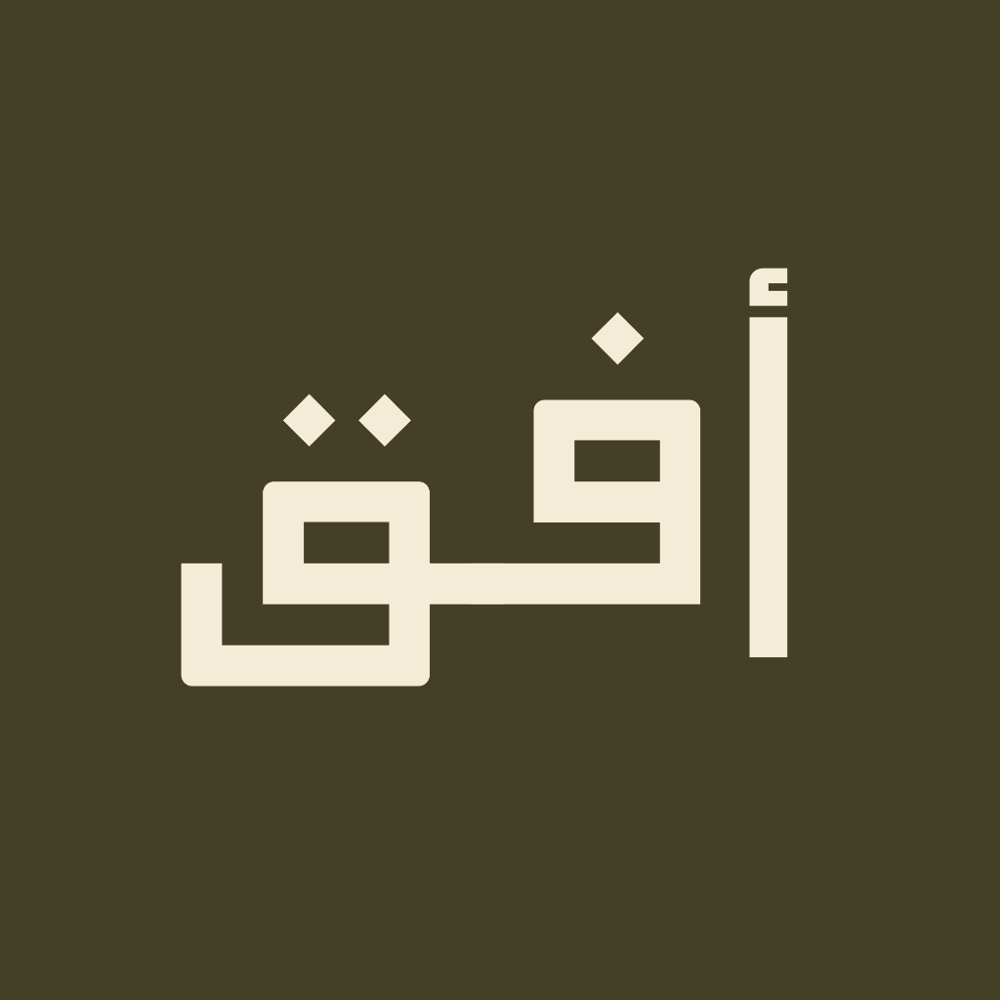

المملكة العربية السعودية (1902 - 1938)
في فجر الخامس من شوال 1319هـ (يناير 1902م)، قاد الملك عبدالعزيز بن عبدالرحمن آل سعود معركة استعادة الرياض بـ 63 فارساً فقط. كانت تلك الشرارة الأولى لمسيرة ثلاثين عاماً من البناء والبطولة، توجت في 23 سبتمبر 1932م بتوحيد أرجاء شبه الجزيرة تحت اسم: المملكة العربية السعودية.
«ولكن بعد عام واحد فقط من التوحيد، انطلقت رحلة استكشاف جديدة ستغيّر موازين العالم وتكتب تاريخاً جديداً من باطن الأرض...»
بعد توقيع اتفاقية الامتياز عام 1933م، بدأت رحلة استكشاف كبرى في مجاهل الصحراء. لم يكن اكتشاف النفط صدفة أو بجهد فردي، بل تحالفاً أسطورياً جمع بين العلم الجيولوجي الحديث وعبقرية البدو في قراءة تضاريس الصحراء والنجوم.
كبير الجيولوجيين الأمريكيين (شركة سوكال)
جيولوجي عبقري تخرج من جامعة ستانفورد. تميز بقدرته الفائقة على قراءة الطبقات الجيولوجية تحت رمال الصحراء القاحلة. وعندما أوشكت الشركة على إيقاف المشروع بعد خيبة 6 آبار جافة، أصرّ بصلابة على مواصلة الحفر إلى عمق غير مسبوق في طبقة "العرب".
خبير الصحراء والملاح السعودي الفذ (قبيلة آل مرّة)
دليل الصحراء الأسطوري الذي عيّنه الملك عبدالعزيز لمرافقة الجيولوجيين. كان يقرأ تضاريس الصحراء بالنجوم والرياح ورائحة الرمال كأنها كتاب مفتوح دون بوصلة أو أجهزة. وبدونه، لم يكن للجيولوجيين أن يحددوا قباب الظهران أو يبقوا أحياء في قيظ الرمال.
خلّد التاريخ هذا التحالف الفريد؛ فأطلقت أرامكو اسم "رمثان" على حقل نفطي، وسمّت إحدى ناقلاتها العملاقة باسم "خميس بن رمثان" تكريماً لعطائه التاريخي.
مرّت خمس سنوات عجاف. أُنفق مئات الآلاف من الدولارات دون قطرة نفط تجاري واحدة. الآبار من 1 إلى 6 باءت بالفشل، ومجلس إدارة الشركة في كاليفورنيا يستعد لإصدار أمر الانسحاب النهائي.
«إلى ماكس ستاينكي وفريق التنقيب: استنزاف مالي حاد، الآبار جافة أو غير اقتصادية. مجلس الإدارة يوصي بوقف التمويل فوراً وإغلاق موقع الظهران ما لم يثبت وجود نفط فوري.»
أنت الآن في عام 1937: الخزائن تنفد، والإحباط يخيم على المخيم. ما هو قرارك التاريخي؟
رد ستاينكي ببرقية قاطعة: "احفروا أعمق إلى المنطقة العربية الجوراسية!". استمرت الحفارة بالدوران ليلاً ونهاراً نحو أعماق سحيقة لم يسبق سبر غورها في الجزيرة العربية.
لو انسحبت الشركة عام 1937، لبقيت أضخم ثروة طاقة في العالم مدفونة تحت الرمال لعقود! لكن الرؤية الثاقبة والعزيمة السعودية قادتهم للرفض ومواصلة الحفر.
اضغط واستمر بالضغط على زر "احفر الآن" لتشغيل الحفارة الميكانيكية والنزول عبر طبقات الأرض حتى عمق 1,441 متراً (4,727 قدماً).
في تمام الساعة التاسعة صباحاً، وعند عمق 1,441 متراً، اندفع النفط الخام بمعدل 1,585 برميلاً يومياً من بئر الدمام رقم 7. أمر الملك عبدالعزيز بتسميته «بئر الخير». وبحلول نهاية الشهر تدفق بمعدل 3,810 براميل يومياً لتبدأ نهضة أمة غيرت مجرى الاقتصاد العالمي.
في 1 مايو 1939م، أدار الملك عبدالعزيز بيده الكريمة صمام تحميل أول شحنة نفط خام على متن الناقلة "دي جي سكوفيلد" في ميناء رأس تنورة. انطلقت المملكة من قسوة الصحراء إلى مصاف القوى الاقتصادية الكبرى، وتتوج اليوم برؤية السعودية 2030.
الملك عبدالعزيز يدير صمام الشحن في رأس تنورة لتدشين تصدير أول شحنة نفط تجارية للعالم على متن الناقلة «دي جي سكوفيلد».
تغيير اسم الشركة إلى شركة الزيت العربية الأمريكية (أرامكو)، لتصبح ركيزة إمدادات الطاقة الكبرى في العالم.
مد خط أنابيب التابلاين عبر 1,200 كم من المنطقة الشرقية إلى البحر الأبيض المتوسط، في أضخم إنجاز هندسي بزمنه.
تحول المملكة إلى قوة استثمارية عالمية وتنويع مصادر الاقتصاد مع الحفاظ على الريادة العالمية للطاقة المستدامة.